Resposta. , , , 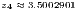, 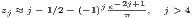
E 3.7.2 (title=Eletricidade). A corrente elétrica, , em Ampères em uma lâmpada em função da tensão elétrica, 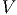, é dada por
Resposta. 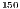 W, W, W, W, 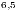 W
E 3.7.3. (Bioquímica) A concentração sanguínea de um medicamente é modelado pela seguinte expressão
 , em que instantes de tempo a concentração é metade
do valor máximo. Calcule com precisão de segundos.
, em que instantes de tempo a concentração é metade
do valor máximo. Calcule com precisão de segundos.
Resposta. a) s e min s, b) min s.
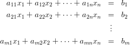
s.
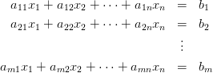
E 3.7.4. Considere o seguinte modelo para crescimento populacional em um país:
 , e com base nos anos de 1960, 1970 e 1991 conforme
tabela:
, e com base nos anos de 1960, 1970 e 1991 conforme
tabela:| Ano | população |
| 1960 | 70992343 |
| 1970 | 94508583 |
| 1980 | 121150573 |
| 1991 | 146917459 |
Use esses parâmetros para calcular a população em 1980 e compare com o valor do censo.
Resposta.

E 3.7.5 (title=Fluidos). Uma boia esférica flutua na água. Sabendo que a boia tem 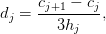 de volume e 2Kg de massa. Calcule a altura da porção molhada da boia.
Resposta.  cm
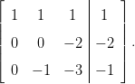
cm
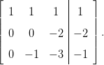
E 3.7.6 (title= Fluidos). Uma boia cilíndrica tem secção transversal circular de raio 10cm e comprimento 2m e pesa 10Kg. Sabendo que a boia flutua sobre água com o eixo do cilindro na posição horizontal, calcule a altura da parte molhada da boia.
Resposta. cm
Resposta. 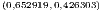 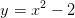
E 3.7.8 (title= Matemática financeira). Um computador é vendido pelo valor a vista de R$2.000,00 ou em 1+15 prestações de R$200,00. Calcule a taxa de juros associada à venda a prazo.
Resposta. 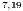% ao mês
E 3.7.9 (title= Matemática financeira). O valor de R$110.000,00 é financiado conforme a seguinte programa de pagamentos:
| Mês | pagamento |
| 1 | 20.000,00 |
| 2 | 20.000,00 |
| 3 | 20.000,00 |
| 4 | 19.000,00 |
| 5 | 18.000,00 |
| 6 | 17.000,00 |
| 7 | 16.000,00 |
Calcule a taxa de juros envolvida. A data do empréstimo é o mês zero.
Resposta. % ao mês. 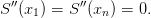
E 3.7.10 (title=Controle de sistemas). Depois de acionado um sistema de aquecedores, a temperatura em um forno evolui conforme a seguinte equação
Resposta. K, 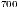 K em 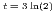, min,  h min.
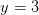
h min.
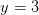
Resposta. 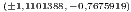, 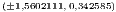
E 3.7.12 (title= Otimização). Encontre a área do maior retângulo que é
possível inscrever entre a curva  e o eixo 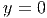.
e o eixo 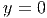.
Resposta. 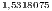
E 3.7.13 (title=Otimização). Uma indústria consome energia elétrica de duas usinas fornecedoras. O custo de fornecimento em reais por hora como função da potência consumida em 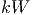 é dada pelas seguintes funções
Resposta. Aproximadamente 2500 reais por hora.
E 3.7.14 (title= Termodinâmica). A pressão de saturação (em bar) de um dado hidrocarboneto pelo ser modelada pela equação de Antoine:
 , e são constantes dadas conforme a
seguir:
, e são constantes dadas conforme a
seguir:
| Hidrocarboneto | A | B | C |
| N-pentano | 9.2131 | 2477.07 | -39.94 |
| N-heptano | 9.2535 | 2911.32 | -56.51 |
Resposta. a) K b) K
Resposta. , ,